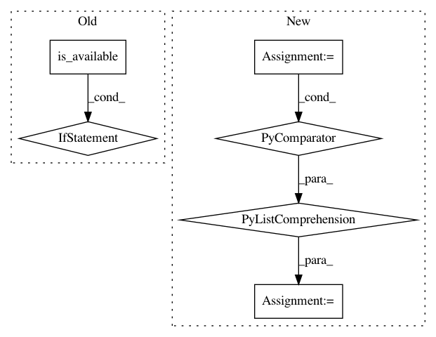

618c1cac7908e5aa61fd95e0d1c6c1f31a2db95d,pymanopt/core/problem.py,Problem,backend,#Problem#,75
Before Change
"Cannot identify an autodiff backend from cost "
"function that also was successfully imported. "
"TheanoBackend was%s successfully imported. " %
("" if backend_theano.is_available() else " not") +
"AutogradBackend was%s successfully imported. " %
("" if backend_autograd.is_available() else " not")
)
After Change
self._backend = backend
break
else:
backend_names = [backend.name for backend in self._backends]
raise ValueError(
"Cannot determine autodiff backend from cost function. "
"Available backends are: {:s}".format(
", ".join(backend_names)))
In pattern: SUPERPATTERN
Frequency: 3
Non-data size: 6
Instances
Project Name: pymanopt/pymanopt
Commit Name: 618c1cac7908e5aa61fd95e0d1c6c1f31a2db95d
Time: 2016-02-19
Author: niklas.koep@gmail.com
File Name: pymanopt/core/problem.py
Class Name: Problem
Method Name: backend
Project Name: pytorch/tutorials
Commit Name: 133e5b6a84e126cbcfbc5c11eeb6286185dbec2f
Time: 2020-12-02
Author: 6156351+zhangguanheng66@users.noreply.github.com
File Name: beginner_source/torchtext_translation_tutorial.py
Class Name:
Method Name:
Project Name: Shawn1993/cnn-text-classification-pytorch
Commit Name: 5c177f3d9a29fc7737bd4734315820d1c11c7e87
Time: 2019-07-17
Author: rriva002@ucr.edu
File Name: cnn_text_classification.py
Class Name: CNNClassifier
Method Name: predict